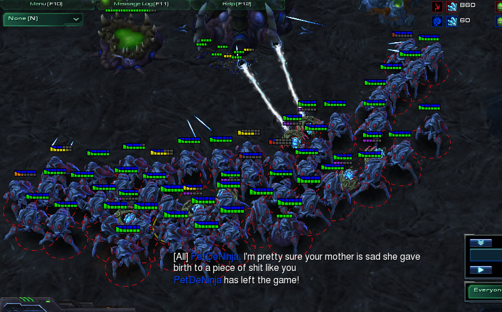

After over 2 decades, Starcraft is still the king of multiplayer RTS games. The original Starcraft and its expansion Brood War were released in 1998, and played a large part in the creation of e-sports as we know it today. Although RTS may be a dying breed, both Starcraft games still remain relevant, and have managed to retain healthy playerbases. I've personally played Starcraft II on and off since about 2014, and recently returned to it a few weeks ago thanks to everybody's favorite pandemic.
Frankly, we might not ever get a Starcraft 3. The era of the RTS might be a thing of the past, so I figured I'd better appreciate it while it's still alive and kicking, and discuss why Starcraft II has (thus far) stood the test of time.
Quick aside for the uninitiated: RTS, or Real-Time Strategy games, involve you controlling an entire army to victory - each individual worker, building, and soldier are yours to command. As a result, the skill ceiling on these games can be virtually impossible to reach - there's a lot going on, and it's reasonable to say that Starcraft II is hard as shit.
Luckily, this isn't much of a barrier to entry at all. Starcraft II became Free to Play after November 14, 2017, and the Matchmaking system is pretty good at finding you people that are around your skill level. We'll discuss that in depth later, but the important thing to know is that it's actually pretty easy to get into SC2. A lot of people are (understandably) intimidated by the genre, but as someone who is 0% Korean, I can confidently say that Starcraft is enjoyable no matter what your skill level is.
Being a F2P player doesn't mean you'll be hindered - in fact, you already have access to the vast majority of the game's content. Right off the bat, you can try out multiplayer matchmaking, custom maps, co-op missions, and the first campaign, Wings of Liberty. The only thing money buys you at this point is the last 2 campaigns, a DLC add-on campaign, instant access to Ranked ladder (if you're F2P, you'll need to get 10 First Wins of the Day), certain co-op commanders, and skins/cosmetics that don't affect gameplay at all.
Obviously, if you've never played SC2, I would recommend not spending money on it, unless you play the game and find out that you actually enjoy it + want these extra things.
There's a lot of ways to play Starcraft, so I figured I'd start with the most obvious.
Starcraft II features 3 races: the Terrans (space rednecks), the Protoss (pretty much the Jedi), and the Zerg (alien bugs). Unsurprisingly, it also features 3 singleplayer campaigns, each one focusing on their respective race. While they're not entirely representative of their multiplayer counterparts, playing through all the campaigns gives one a pretty good base understanding of each race, and how they function.
Each campaign is fairly long, but the missions are varied enough that it never feels drawn out or boring. It's great fun building up your army, unlocking new units and permanent upgrades along the way. Each campaign has also has a well thought-out difficulty curve, with the game throwing more and more challenges at you the more you familarize yourself with its mechanics.
Where it falls flat, however, is its story, which feels like a weird crossover between Dragon Ball Z and an Adam Sandler rom-com. If you had revealed to me the plot of Starcraft II over a decade ago, I'd be convinced that you'd just handed me some Internet weirdo's fanfiction, rather than an official Blizzard script. It's a little cheesy, more than a little hard to believe, and the antagonist literally could not be more bland or one dimensional even if they tried. That's about all I can say without going into spoilers; just know that the campaigns are fun to play through, but not very well written.
The real reason to play SC2 is the multiplayer.
Dip your toes in the cold water of competitive online RTS, either through playing the AI, playing with/against your buddies, or hopping into the dangerous world of Matchmaking, where you're just as likely to get pwned by a 12 year Starcraft Veteran from Korea as you are to getting cussed out by a 12 year old from Bumfuck, Georgia. Ah, the joys of the Internet.
While SC2 is a soul-crushingly difficult game, much of it's appeal comes from conquering that difficulty, and the euphoria you get from a hard-earned victory. Like some other games cough Hollow Knight cough, the best part about SC2 is getting good at it. Although the majority of games could be summed up as "which one of you made more stuff," there's so much that happens in a Starcraft game, from scouting, to harassment, to economic decision making (more bases? more army? or more tech?) that as you learn more about the game, you begin to realize how little you actually know.
That being said, SC2 is best enjoyed with friends. Although the game is primarily balanced around 1v1, team games are great fun, and working with and learning from your buddies can be very rewarding; I think this game is a lot easier to get into if you have someone to play with, as learning solely through 1v1 ladder can be a bit discouraging.
In this vein, Co-op mode is a great, relatively new addition to the experience as well, with modified commanders who are all hilariously overpowered in their own way, and generally simple objectives for your team to complete. Although the mode could use some more variety in terms of difficulty and maps, and it's a shame you can only have 2 players, there's still quite a lot of content in co-op, and it's great fun learning to abuse all the broken shit you have at your disposal.
Oh yeah, also there are custom game modes. They don't seem quite as lively or creative as they were in the heydays of WarCraft III and the original StarCraft, but they offer some nice variety if you want a break from all the 5000 APM zerg rushes you've encountered.
The things that make SC2 so difficult also make it one of the best spectator sports. Even if you've never played a game of Starcraft in your life, it's fairly simple to follow: it's a 1v1, so it's basically just two dudes trying their best to kill each other. Obviously, once you've played a bit, you develop more of an appreciation for what's actually happening on screen, and how much skill and dexterity it takes to actually do it.
I've always thought 1v1 games made for the best viewing experience. Rivalries are much more real, and storylines and narratives are almost more interesting to follow than the games themselves. The game has such a high skill ceiling that most of us will realistically never even come close to what is technically possible. But, of course, that means it's a treat to watch people who can do those things. And I know there are many people who follow the Starcraft II scene despite not even playing anymore.
Maybe you've picked this game, or another RTS game up, and decided it wasn't for you. Too fast, too stressful, too much shit going on - that's fair. But if you're interested at all, check out some SC2 on Youtube. Or even if you just have 15 minutes to spare, check out below :)
Starcraft 2 good game. It is difficult, but rewarding to get good at. Also it's free, so like, go play it.
22 twinkletoes out of 10 baby seals.